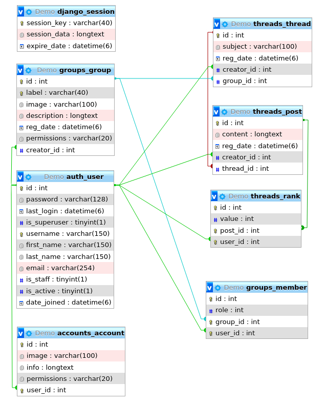

Sociální síť
- Autoři
- Richard Fiľo
xfilor00@stud.fit.vutbr.cz -
návrh a implementácia dátoveho modelu a funkcií vo view.
- Adam Barča
xbarca04@stud.fit.vutbr.cz -
návrh a implementácia uživatelského rozhrania a testovanie.
(Poznamka: Rozdelenie je len orientačné, v skutočnosti sa úlohy riešiteľov prelínali.)
- URL aplikace
- https://rfilo.pythonanywhere.com/
Uživatelé systému pro testování
| Login | Heslo | Role |
|---|
| rfilo | root1234 | Administrátor |
| abarca | root1234 | Registrovaný uživatel |
| test1 | root1234 | Registrovaný uživatel-Správca skupiny Test1 |
| test2 | root1234 | Registrovaný uživatel-Moderátor skupiny Test1 |
| test3 | root1234 | Registrovaný uživatel-Žiadateľ o moderátora skupiny Test1 |
| test4 | root1234 | Registrovaný uživatel-Člen skupiny Test1 |
| test5 | root1234 | Registrovaný uživatel-Žiadateľ o člena skupiny Test1 |
Implementace
Informačný systém je implementovaný vo frameworku python-django. Celková aplikácia sa skladá z viacerých podaplikácii.
Každá podaplikácia je zameraná na nejakú časť aplikácie.
Podaplikácie sa skladajú z urls.py, views.py, models.py, forms.py a adresár templates s príslušnými html súbormi.
Funkcionalita uvedených kľúčových častí programu:
- views - funkcie na obsluhu HTTP žiadostí, vracajú HTTP odpovede,
- urls - funkcie mapujúce HTTP žiadosti na príslušné views,
- models - pythonovské objekty, ktoré definujú štruktúru dát aplikácie (vytvorené na základe ER diagramu) aj integritné obmedzenia,
- forms - formuláre, nad ktorými je možné robiť validáciu,
- templates - textové dokumenty, definujú štruktúru rozloženia HTML stránky.
Accounts
Doplňuje funkcionalitu User-a. V djangu je User a veci s tým spojené defaultne implementované.
Groups
Obsahuje implementáciu skupín, členov a vecí s tým spojených.
Threads
Obsahuje implementáciu vlákien, príspevkov a vecí s tým spojených.
Databáze

Instalace
- Nakopírujte projekt na váš server.
- Pred inštaláciou je potrebné vytvoriť virtuálne prostredie pomocou virtualenv a nainštalovať do neho python3.8.
- Po zapnutí virtuálneho prostredia sa softwarové požiadavky nainštalujú príkazom pip install -r req.txt.
- V súbore social_network/settings.py nakonfigurujte pripojenie k databázovemu serveru.
- Pomocou príkazu python manage.py makemigrations a python manage.py migrate vytvoríme databázove objekty.
- Aplikácia sa spustí príkazom python3 manage.py runserver.
Známé problémy
Dúfame, že zadanie je úplne splnené. Niesu implementované iba rozšírenia.